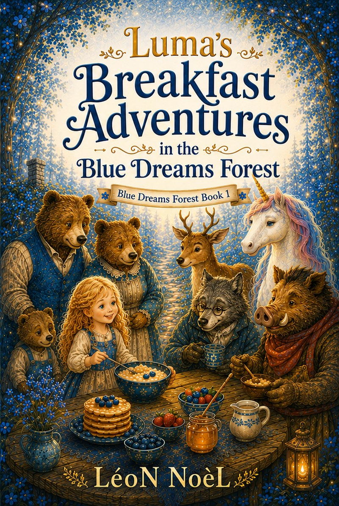
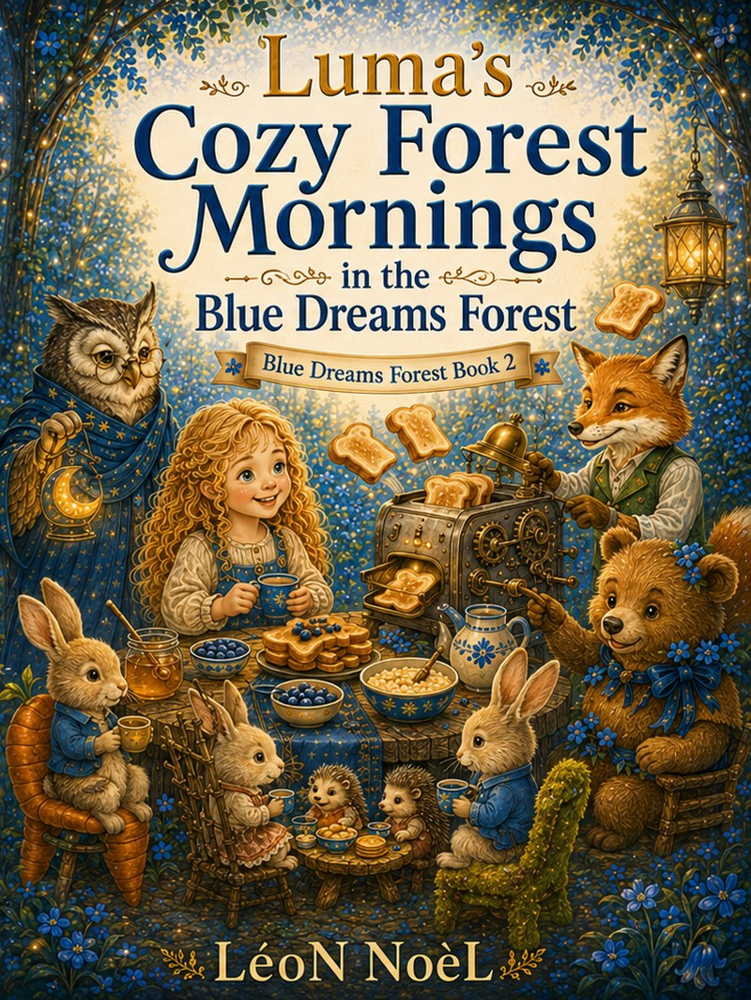
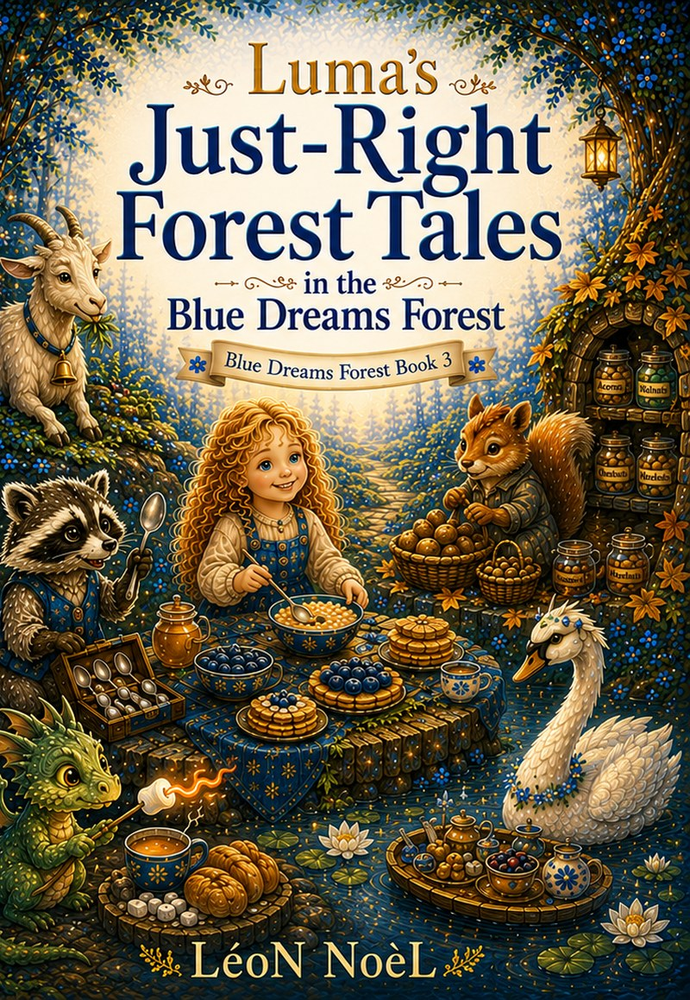
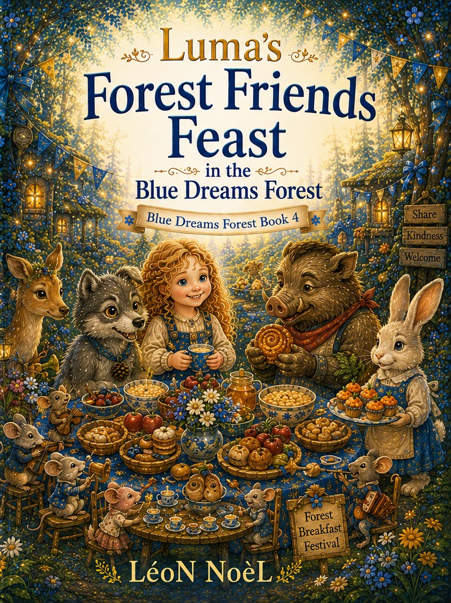
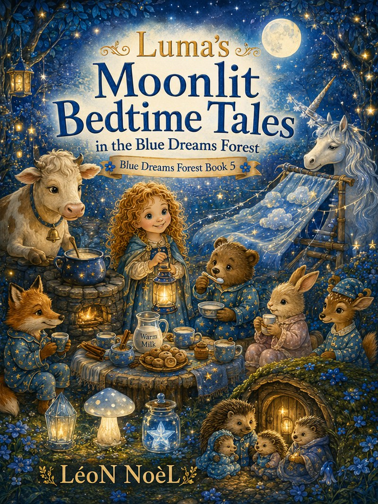
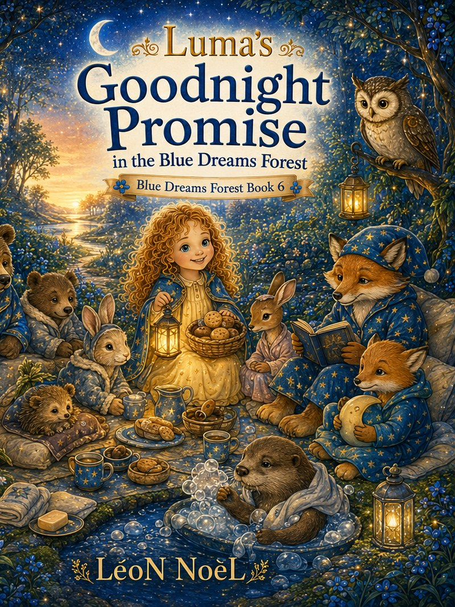

Luma’s Blue Dreams Forest
Five gentle stories in every volume.
Illustrated read-aloud anthologies for bedtime, shared reading, and developing readers ages 4–8.
Join Luma for forest breakfasts, moonlit paths, welcoming friendships, practical routines, and small lessons to carry home.
Six-book collection30 complete storiesAges 4–8Read aloud or read together

The complete collection
Six illustrated anthologies, published every two weeks.
Each volume contains five complete stories plus discussion prompts and child-friendly activities.

Blue Dreams Forest · Book 2
Luma’s Cozy Forest Mornings
Owls, foxes, hedgehogs, bunnies, and birthday friends.
Planned publication: August 19, 2026

Blue Dreams Forest · Book 3
Luma’s Just-Right Forest Tales
Sharing, honest choices, careful planning, gentle strength, and balance.
Planned publication: September 2, 2026

Blue Dreams Forest · Book 4
Luma’s Forest Friends Feast
Welcome, comfort, inclusion, listening, and gathering around a shared table.
Planned publication: September 16, 2026

Blue Dreams Forest · Book 5
Luma’s Moonlit Bedtime Tales
Moonlit paths, bedtime routines, pajamas, nightlights, and dream-soft kindness.
Planned publication: September 30, 2026

Blue Dreams Forest · Book 6
Luma’s Goodnight Promise
Slow steps, quiet baths, gentle endings, night sounds, and morning promises.
Planned publication: October 14, 2026
For parents and educators
A calm bridge between story and conversation.
The stories use practical situations—sharing food, joining a group, calming at bedtime, admitting mistakes, and trying again—to support gentle family discussion.
Best used for
- Bedtime and quiet-time read-alouds
- Supported reading for developing readers
- Social-emotional conversations
- Home, classroom, and library storytime